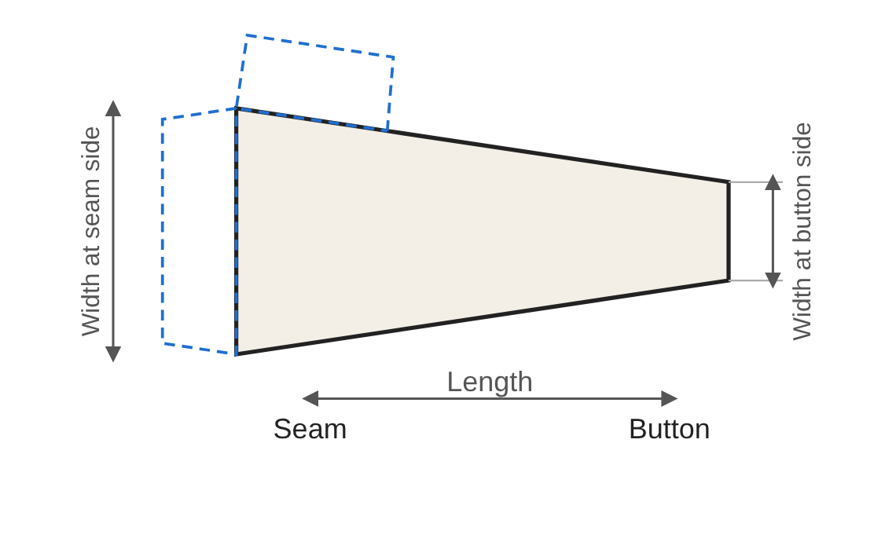
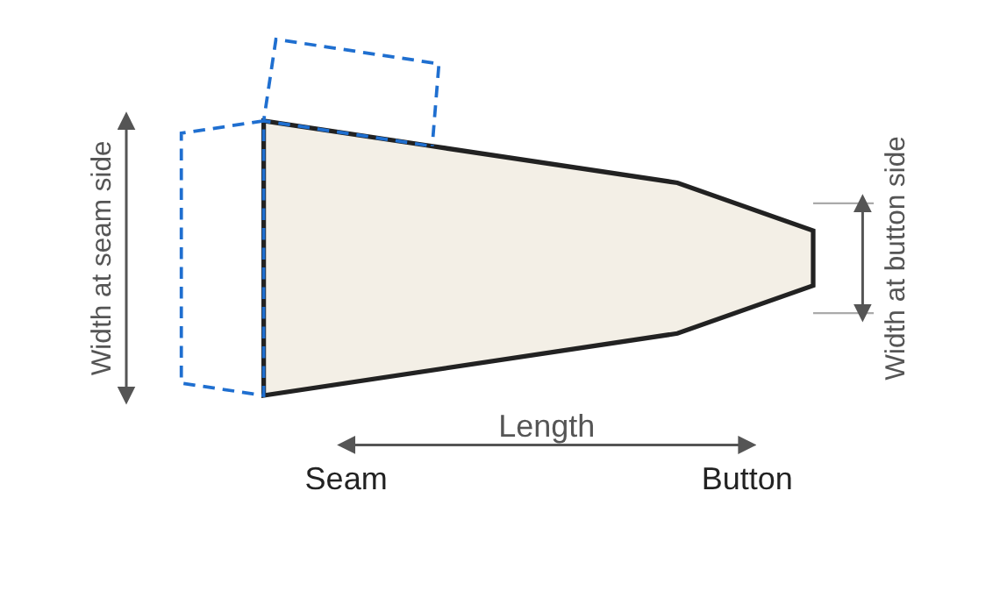
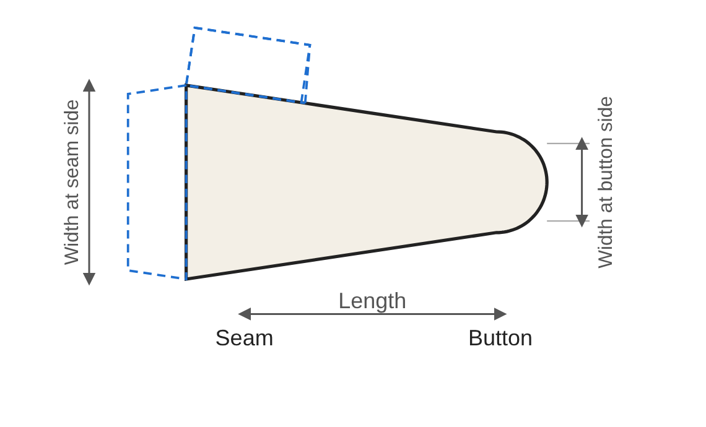

Options guide: sleeve tabs
Sleeve tabs matter for style and are often used for that alone, with no practical purpose. A sleeve tab is a small strip of fabric sewn onto the sleeve. The principle is that of a simplified epaulette.
The basic measurements
A tab has two ends: the seam side, sewn onto the sleeve, and the side to be fastened (button side), which crosses the sleeve opening and is fastened as you choose (buttons, snap fasteners…). It is made of two pieces: cut 2 copies per tab (4 for a pair of sleeves). Three measurements define it:
- Length: from the seam side to the button side. Choose it according to your sleeve and the look you want.
- Width at seam side: width of the end sewn onto the sleeve.
- Width at button side: width of the free end. If it is smaller than the width at the seam side, the tab tapers towards the button.
The three shapes
These three shapes are simply among the most common ones. This guide makes no claim to be exhaustive: other shapes are possible, and suggestions are welcome through the “Your feedback” form.



Straight. The button end is straight. This is the simplest shape to make.
Bevelled. The two corners on the button side are cut at an angle, without the end necessarily being pointed. Two options: the length of the bevel along the edge (as a proportion of the tab length) and the shape of the end, from 1 (no bevel, straight end) to 0 (a sharp point). In between, the end is more or less wide.
Rounded. The button end is rounded. One option: the size of the rounding, as a proportion of the length. The larger the value, the earlier the rounding starts. The rounding extends slightly beyond the stated length.
Placing the tab on the sleeve
The tab is attached to the outer side of the sleeve, the side facing away from the body: the free part (button side) is at the top and the sewn part (seam side) at the bottom. It is used to close the sleeve opening where there is one, and can even make the sleeve opening narrower by adding a second button; without an opening, the tab is purely decorative. Its position therefore depends on that opening. A few pointers:
- Pin the tab, or a paper strip of the same size, onto the sleeve and try it before sewing. Then mark the exact position of the button or fastening.
- With an opening, place the tab so that the button side can close it; without one, choose the position freely to suit the style.
- To make both sleeves match, measure the distance from the sleeve hem and use the same measurement on each one.
- Cut 2 pieces per tab: remember to place the tab on the right sleeve and the one on the left sleeve in the same way.
Fastening
The pattern does not include a fastening: the type (button, snap fastener, hook-and-loop…) and its position are up to you, to be marked on your garment.
Seam allowance and fold-under allowance
The seam allowance can be adjusted in the tool (1 cm by default). The fold-under allowance (blue dotted lines on the pattern) can also be adjusted (1.5 cm by default). Two folds are drawn: the seam-side fold, used when attaching the tab to the sleeve, and the top fold. The second fold is useful when you choose a small width: the seam-side fold alone would then be too small to turn the piece right side out.
Sewing tips
- Depending on the fabric and the style you choose, fusible interfacing may be needed on one or both sides.
- Press the fold-under with an iron before turning the piece right side out, to make the final shaping easier.
- Trim the corners well to make it easier to reshape them after turning.
- The thicker the fabric, the less sharp the angle should be, to make shaping easier.
- Topstitching the finished piece is a plus.